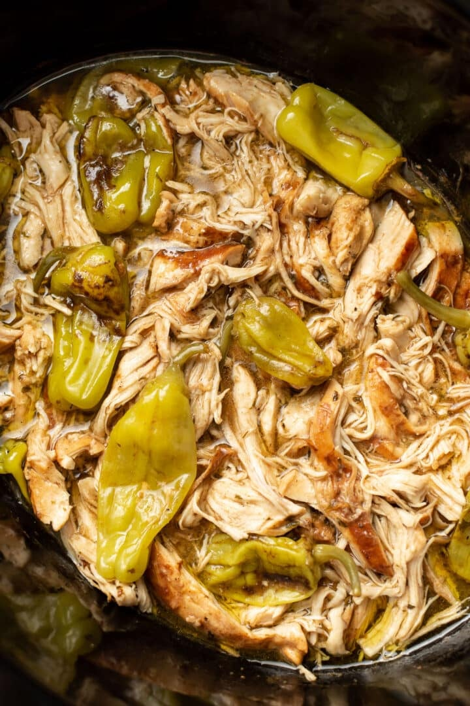

Mississippi Chicken
Home
Mississippi Chicken

Description
This 5-ingredient Mississippi chicken recipe is really easy to make
and perfectly juicy! The signature pepperoncini ranch sauce tastes zesty and amazing.
Ingredients
- 4 lbs boneless skinless chicken breasts
- 6 pepperoncini peppers
- 1 packet (1 ounce) aujus gravy
- 1 packet (1 ounce) ranch seasoning mix
- 1 stick of butter
Steps
- Trim any excess fat from chicken
- Place chicken in the bottom of a slow cooker
- Sprinkle over au jus and ranch seasoning
- Cut butter in 1 Tbsp size pieces and place on top of chicken
- Place 6 pepperoncini peppers on top of chicken
- Cook on low for 8 hours
- Shred chicken and enjoy over mashed potatos